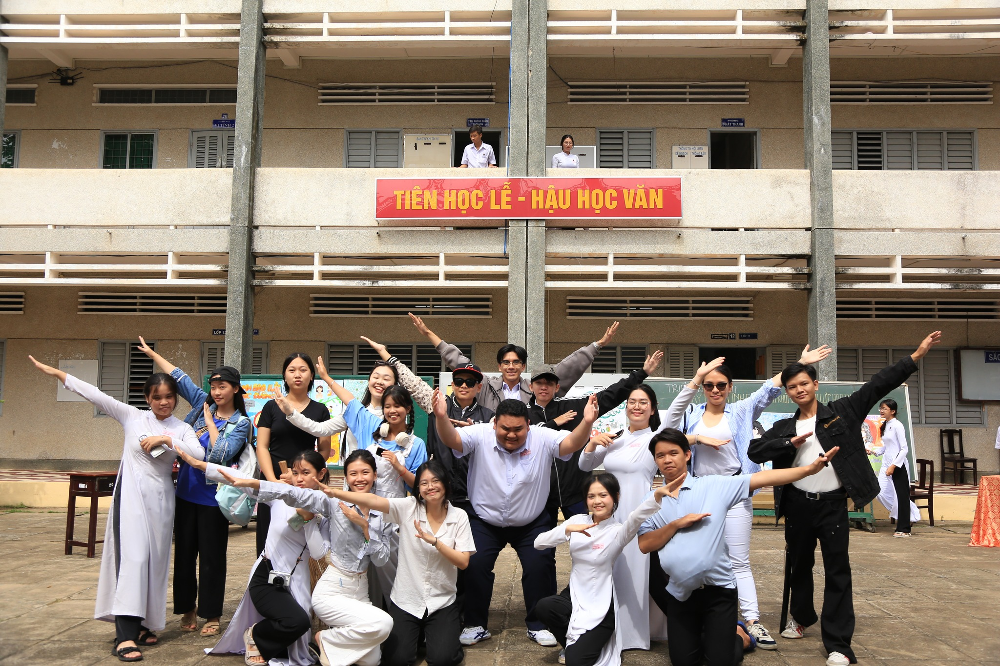

HÀNH TRÌNH MỚI
Tạm biệt 𝗡𝗗𝗖 𝗦𝗠𝗖 và 𝗡𝗗𝗖 𝗣𝗛𝗢𝗧𝗢𝗚𝗥𝗔𝗣𝗛𝗬 𝗖𝗟𝗨𝗕 để cùng nhau hoạt động với dưới danh nghĩa 𝗬𝗢𝗨𝗧𝗛 𝗢𝗙 𝗡𝗗𝗖.
𝗡𝗗𝗖 𝗦𝗢𝗖𝗜𝗔𝗟 𝗠𝗘𝗗𝗜𝗔 𝗖𝗟𝗨𝗕 và 𝗡𝗗𝗖 𝗣𝗛𝗢𝗧𝗢𝗚𝗥𝗔𝗣𝗛𝗬 𝗖𝗟𝗨𝗕 đã cùng nhau trải qua rất nhiều kỷ niệm, cùng hoạt động với nhau trong rất nhiều sự kiện, đi qua biết bao nhiêu cung bậc cảm xúc. Thì ngày hôm nay, chúng ta chính thức nói lời chia tay với hai cái tên cũ để cùng nhau lột xác và mang cho mình một vỏ bọc mới, trong một hình hài mới.
Cái tên 𝗬𝗢𝗨𝗧𝗛 𝗢𝗙 𝗡𝗗𝗖 sẽ là người bạn đồng hành tiếp theo của các 𝑵𝑫𝑪-𝒆𝒓𝒔 trong khoảng thời gian dài sắp tới. Chúng mình hy vọng rằng các bạn sẽ không bao giờ quên đi cái tên 𝗦𝗠𝗖 và 𝗙𝗟𝗔𝗠𝗘𝗦. Bên cạnh đó, hãy chào đón đứa con tinh thần sắp tới của bọn mình.
Và bọn mình là 𝗬𝗢𝗡-𝗬𝗢𝗨𝗧𝗛 𝗢𝗙 𝗡𝗗𝗖. Rất mong mình sẽ nhận được sự quan tâm của mọi người. Đây sẽ là ngôi nhà mới của chúng mình.
CONTACT: yonyouthofndc@gmail.com